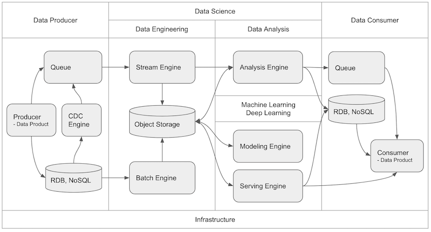
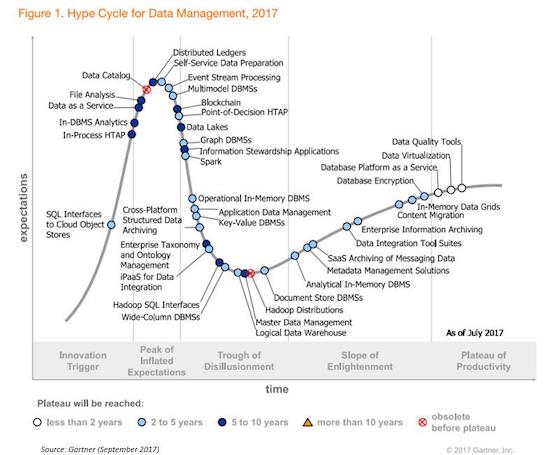
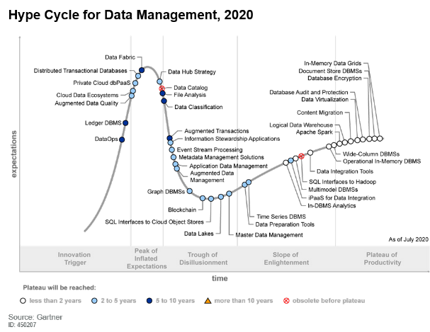
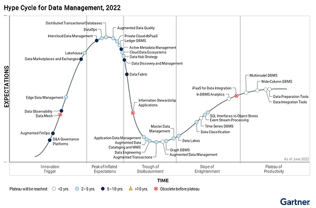
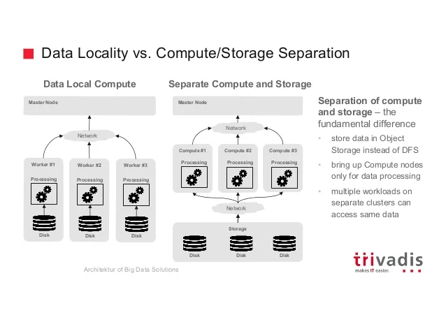
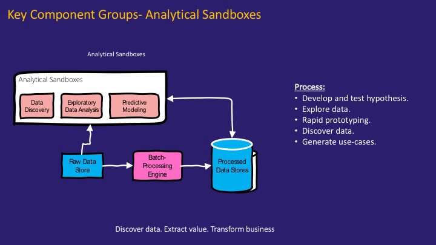
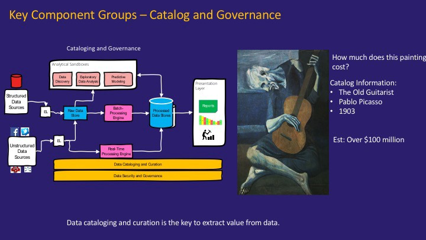

Platform
Contents
Platform#
E2EDS를 수행하기 위해서는 플랫폼 또한 데이터 사이언티스트가 End to End 하게 빠르게 인사이트를 얻을 수 있도록 통일되고 유기적으로 연결되는 것이 좋습니다.
Platform 영역은 크게 Infrastructure, Data Producer, Data Science, Data Consumer 영역으로 나누어 볼 수 있으며, 데이터 흐름은 아래 도식화된 형태로 흘러가게 될 것입니다.

E2EDS를 수행하기 위해서는 상당히 다양한 플랫폼을 조합해서 사용해야하기 때문에 플랫폼들을 직접 운영할 경우 많은 리소스를 소모하게 됩니다. 따라서, 플랫폼은 최대한 추상화된 서비스를 이용하여 구성합니다. 플랫폼은 E2EDS를 잘 수행하는 수단이지 목적이 아니기 때문입니다. 많은 사례에서 플랫폼을 인하우스로 해결하려고 하다가 배보다 배꼽이 더큰 상황에 직면하게 됩니다. 인프라/플랫폼 엔지니어링 또한 또다른 하나의 큰 영역임을 잊지 말아야 합니다.
Infrastructure#
On-premise 보다는 Cloud
Cloud: 인프라 및 기술 스택을 모두 클라우드 벤더의 서비스를 이용
On-premise: 내부적으로 인프라 및 기술 스택등 직접 모든 것을 해결
Native 보다는 Container
Container: OS 레벨부터 추상화를 통해 의존성 독립된 서비스 제공
Native: 추상화 없이 OS 상에 직접 서비스 제공
IaaS 보다는 SaaS 서비스
SaaS (Software as a Service): IaaS + PaaS + 개발된 소프트웨어까지 서비스로 제공
PaaS (Platform as a Service): IaaS + 개발을 위한 플랫폼까지 서비스로 제공
IaaS (Infra as a Service): 인프라(서버, 네트워크, 스토리지 등)까지 서비스로 제공
Data Producer & Comsumer#
이 영역은 생성된 데이터가 일정기간 쌓이거나 분석이 완료된 데이터를 서비스하는 영역입니다.
Queue#
웹, 센서 로그 등의 트래픽 데이터가 저장되는 영역입니다.
다양한 메시지 큐 플랫폼(ZeroMQ, ActiveMQ, 등등)이 존재하지만 메시지 버스가 아닌 대용량 로그 처리에 특화된 플랫폼을 주로 사용합니다.
Kafka: Confluent Kafka
각 Cloud 상의 매니지드 Kafka 또는 Kafka 호환 분산 메시지 큐
AWS: Kinesis, Azure: EventHub, Google: Pub/sub
CDC Engine#
Change Data Capture(CDC)는 방대한 데이터베이스상의 데이터를 정기적으로 추출하여 전송해야 할 경우, 이를 효율적으로 하기위해 변경된 데이터만을 추출하여 전송합니다.
이 경우, 데이터베이스 시스템의 추출 로드나 네트워크 부하를 많이 줄일 수 있게 됩니다.
Debezium: Kafka Connect 기반의 CDC 엔진으로 다양한 데이터베이스를 제공합니다. Kafka를 사용한다면 좋은 선택중 하나입니다.
RDB (Relational Database)#
센서 정보, 고객 상태 및 결제 트랜잭션 등 주로 비즈니스 데이터의 상호관련성을 가진 테이블의 집한인 관계형 데이터가 저장되는 영역입니다.
RDB는 오래된 만큼 클라우드 상에 지원되는 DB 가 많습니다. 자신에게 맞는 RDB를 사용하면 됩니다.
MySQL(MariaDB)
PostgresSQL
MSSQL
Oracle
NoSQL (Non-SQL, Not Only SQL)#
RDB 처럼 관계성 및 정합성 데이터 제공이 아닌 빠른 검색 및 응답성을 위한 다양한 데이터 모델을 제공합니다.
Reids
ElasticSearch
MongoDB
Redshift
CosmosDB
Data Science#
Data Science 영역은 Producer 에서 생성된 데이터가 저장되고 분석되는 영역입니다. 제일 중요한 영역으로 이 영역을 커버하는 다양한 플랫폼이 존재합니다. 플랫폼 선택을 위해서는 필요한 요소들에 대해서 알아봅니다.
기술 진화 방향#
이 영역에서 과거의 왕좌는 Hadoop 이었고 지금도 상당 수의 회사들이 빅데이터 시스템으로 사용중이고 다양한 업체들이 Hadoop 솔루션을 제공하고 있지만, 클라우드 환경과 데이터 엔지니어링부터 데이터 분석까지의 다양한 영역을 빠르고 유연하게 제공하기에는 적합하지 않습니다. Tightly Coupled Compute/Storage 아키텍처를 가지고 있고 MapReduce 식 분산 프로그래밍 방식 또한 다양한 응용(실시간, 배치) 잡을 만들기에는 유연하지 않습니다.
Hadoop 은 2017년 Gartnet Hype Curve - Data Management 상에서 안정화 단계에 이르기 전에 이미 구식 기술로 표기되어 폐기된 것을 볼 수 있습니다.

그와 반대로 Apache Spark 은 범용 분산 처리 엔진으로 Loosely Coupled Compute/Storage 아키텍처로 클라우드에 더욱 적합한 Compute/Storage 방식인 Container/Object Storage 상에서 효율적으로 수행할 수 있는 아키텍처를 가지고 있으며, DAG(Directed Acyclic Graph) 방식의 메모리를 캐시를 적극적으로 사용하는 분산 프로그래밍 방식을 통해 실시간 / 배치 처리를 지원하면서도 속도면에서 우수한 성능을 보입니다. 이로써 2020년 Hype Curve 상에서 보이듯 빠르게 안정적인 기술로써 자리 잡았습니다.

2022년 Hype Curve 에서 확인할 수 있듯이 이제 Data Lake 구축은 더욱 일반적이게 되었으며, Data Lake와 Data Warehouse의 장점을 결합한 Lakehouse 기술이 주목받고 있습니다. Apache Spark 에서는 Delta 프로젝트(https://delta.io/)를 통해 Lakehouse 까지의 진화를 꽤하고 있습니다.

데이터 사이언스의 확장되어가는 적용 영역과 기술적 진화 상황을 볼때, 하둡으로 대표되던 빅데이터 플랫폼은 지고 클라우드의 Loosely Computed Compte/Storage 아키텍처에 적합하면서 범용 엔진으로써 Spark 을 기반으로 하여 머신러닝 및 딥러닝 영역까지 커버 가능한 통합 범용 플랫폼의 성장이 두드러 지고 있습니다.
이는 실제 우버의 빅데이터 플랫폼 진화 여정을 통해서도 흐름을 확인해볼 수 있습니다.
Unified Data Service Platform#
저장과 분석이 분리된 아키텍처#
초기 하둡 빅데이터 시스템은 저장과 처리가 통합된 형태의 아키텍처였습니다. 이는 분산 처리 효율화를 위한 Data Locality 를 위한 선택이었지만, 시스템 설계시 최대 처리량을 산정하여 설계해야 하는것으로 인한 비효율성과 Dark Data 와 Long Data 의 저장욕구로 인한 저장용량과 처리능력의 불균형은 Data Lake의 니즈를 더욱 증대 시키게 되었습니다.
Dark Data: 저장되고 있긴 하지만, 부서간 장벽(데이터 사일로) 및 비정형적 특성으로 인해 분석이 어려웠던 데이터로 이미 저장된 데이터
Long Data: 한 분야에서 꾸준히 축적된 히스토리 데이터가 무조건 많은 데이터보다 많은 가치를 가지기때문에 당장 성과가 나지 않더라도 수집해야 하는 데이터
저장과 분석이 통합된 아키텍처의 단점은 저장용량이 더욱 필요하면, 처리 용량이 더 필요 없더라도 노드수를 늘릴 수 밖에 없다는 것입니다. 또한, 데이터의 처리 형식 또한 통합된 분석 엔진에 종속적일 수 밖에 없다는 것입니다. 이에 분산 오브젝트 스토리지 이용하여 다양한 데이터 포맷의 저장을 지원하고 빠른 네트워크를 통해 저장된 데이터를 다양한 분석 플랫폼에서 가져다 쓸수 있도록 저장과 분석이 분리된 아키텍처가 등장하게 됩니다.

{kind=link}
저장과 분석이 분리된 아키텍처는 Schema on Read 의 특성을 나타내게 됩니다. 스토리지는 다양한 형태(정형/비정형)의 데이터를 변경 없이 Raw 형태로 빠르게 저장하는데 집중하며, 스키마의 변경은 데이터 처리 및 분석을 위하여 데이터가 이동될때 수행됩니다. 이는 저장하는 시점에 데이터의 스키마를 정의하는 저장과 분석이 통합된 아키텍처(예: Data Warehouse)의 Schema on Write 와 반대되는 아키텍처입니다.
(Best Practices for Designing Your Data Lake, 2016, Gartner.)
데이터 과학자를 위한 분석 샌드박스#
데이터의 저장과 분석이 통합된 아키텍처에서는 분석 방법이 프레임워크가 지원 하는 것으로 Lock In 된다는 단점이 존재합니다. 데이터 과학의 다양한 분석 방법 적용에 대한 니즈는 더욱이 저장과 분석이 분리된 아키텍처를 선호하게 만들었습니다.
데이터 과학에서 데이터의 융합 분석을 통한 새로운 가치 창출은 빈번히 일어나는 일이기 때문에, 이러한 작업이 더욱 자연스럽게 이루어지도록 하기 위해 데이터 과학자들이 다양한 데이터에 쉽게 접근하고 가설을 검증하기 위한 분석 샌드 박스를 지원하는 것이 대단히 중요합니다.

(https://cdn-images-1.medium.com/max/1600/0*6k5gHgEQB2efl2o8.jpg)
{kind=link}
기존의 VM 기반의 무거운 가상화 대신 Docker 를 통한 가벼운 가상화 및 이를 편리하게 제어할 수 있도록 하는 관리 툴 (Kubernetes)들의 발전 또한 이런 아키텍처의 선택을 가속화 시키고 있습니다.
(Demystifying Data Lake Architecture, 2017, Pradeep Menon.)
데이터 거버넌스/카탈로그/계보#
데이터 레이크에 저장되는 데이터가 많아 질 수록, 데이터를 관리하는 문제 또한, 데이터 레이크 프로젝트의 성패를 가르는 중요한 요소가 되고 있습니다.
데이터 거버넌스(Data Governance): 데이터 관리에 대한 정책, 지침, 표준, 전략 및 방향을 수립하고 관리 할수 있는 조직과 서비스 구축
데이터 카탈로그(Data Catalog): 데이터를 기술할수 있는 데이터인 메타데이터를 관리 할수 있는 시스템
데이터 계보(Data Lineage): 데이터와 데이터간의 관계를 볼수 있는 시스템

(https://cdn-images-1.medium.com/max/1600/0*4nWDUGB6kBMEiosi.jpg)
{kind=link}
데이터 거버넌스를 통한 정책/조직를 구성해 데이터 카탈로그와 데이터 계보를 제공하여 데이터 관리를 함으로써 좀 더 신속하게 데이터 안에서 가치를 뽑아 낼 수 있게 됩니다.
(Demystifying Data Lake Architecture, 2017, Pradeep Menon.)
현업 사용자를 위한 데이터 셀프 서비스#
전통적인 산업들은 Digital Transformation을 통해 데이터 기반의 경영을 강화해 나가고 있습니다. 이러한 Digital Transformation 과정에서 가장 중요하게 것 중 하나가 의사 결정을 해야 하는 자리에 있는 직원들이 데이터 기반으로 고객의 변화를 빠르게 인지할 수 있도록 돕는 것입니다. 따라서, Data Lake 에서 Data Self Service는 중요한 서비스 중에 하나로 인시되고 있습니다.
데이서 셀프 서비스는 데이터의 준비, 탐색, 시각화, 활용 모두를 사용자 스스로 직접 할 수 있도록 돕는 서비스로
BI(Business Intelligence) 셀프 서비스: 데이터를 자유롭게 시각화하고, 인사이트를 추출 가능하도록 돕는 서비스
데이터 탐색 셀프 서비스: 데이터 레이크에 존재하는 데이터를 쉽게 탐색하고 조회 가능하도록 돕는 서비스
데이터 가공 셀프 서비스: 탐색 한 데이터를 목적에 맞게 스스로 가공하고 정제 가능하도록 돕는 서비스
AI 셀프 서비스: 준비된 데이터에 통계분석 알고리즘, 머신러닝 알고리즘 등을 스스로 적용 가능하도록 돕는 서비스
등과 같이 다양한 영역이 존재할 수 있습니다.
현업 사용자들의 데이터 분석 능력을 배가 시키는 과정 또한 필요하지만, 이에 익숙하지 않은 현업 사용자들을 위한 서비스를 발굴하고 제공하는 것 또한 중요합니다. 뮌헨 리의 데이터 사냥꾼은 이러한 측면의 좋은 예입니다.
데이터 사냥꾼 팀 뮌헨 리는 새로운 사용자 층을 지원하기 위해 전용 데이터 수신 팀을 구성하여 데이터 호수에 어떤 데이터 소스를 가져오고 어떤 수준의 품질을 제공하는지 확인했다. 또 ‘데이터 사냥꾼’이라는 팀을 구축해 회사 내부 및 외부의 유스 케이스에 대한 흥미로운 데이터 소스를 찾아내도록 조치했다.
쾰마이어는 “만약 직원이 좋은 아이디어를 갖고 있다면 데이터 사냥꾼들이 나가서 그 데이터를 찾아서 획득하고, 청소하고, 준비하고 그것을 데이터 호수에 가져올 수 있도록 도와준다”라고 설명했다.
한편 이 모든 작업은 자연스럽게 뮌헨 리의 종합적 재교육 프로그램으로 이어졌다. 쾰마이어는 “이러한 조치를 수행하다보면 다른 기업 또한 데이터 엔지니어링 및 데이터 과학을 위한 전담 교육 프로그램이 절실히 필요해지게 될 것”이라고 말했다. 이 회사는 올해 데이터 엔지니어링 및 모델링, 분석 역량을 약 2,000명의 직원에게 훈련시키는 것을 목표로 삼고 있다. 원문
(The Data Lake Manifesto: 10 Best Practices, 2017, Philip Russom.)